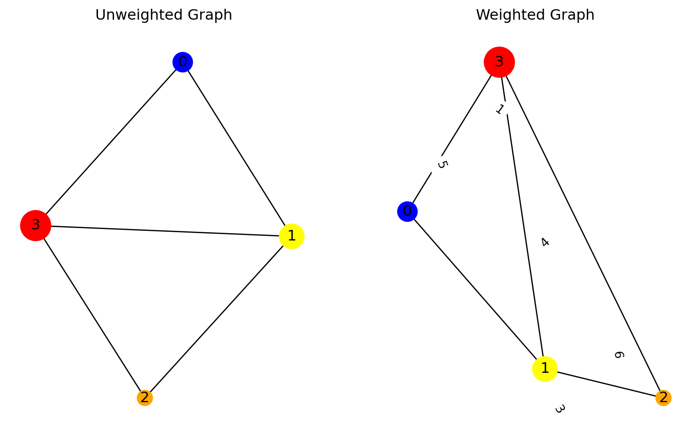

Graph Data Structure
A Graph consists of edges and nodes. These nodes are also known as vertices. Now these nodes are the information centers of the graph and edges are the channels through which this information flows from one node to its neighbouring node.
\[ G = (V, E) \]
We represent a graph using Adjancency Matrix. An Adjancey matrix is square matrix \(v*v\) where \(v\) is number of nodes in graph
\[ Adjancey Matrix = \begin{array}{c|ccc} & \text{0} & \text{1} & \text{2} & \text{3}\\ \hline \text{0} & 0 & 1 & 0 & 0\\ \text{1} & 1 & 0 & 1 & 1\\ \text{2} & 0 & 0 & 0 & 1\\ \text{3} & 1 & 0 & 0 & 0 \end{array} \]
To understand how to build an adjancey matrix we have to understand the types of graphs.
Types of Graphs
Based on directions
- Directed
- Undirected
In directed graph information flows in a particular direction whereas in Undirected graph there is no particular direction for flow of direction.
This directed graph is similar to earlier graph and we will get same adjancey matrix for it.
Now let’s create adjancey matrix for an undirected graph
\[ Adjancey Matrix = \begin{array}{c|ccc} & \text{0} & \text{1} & \text{2} & \text{3}\\ \hline \text{0} & 0 & 1 & 0 & 1\\ \text{1} & 1 & 0 & 1 & 1\\ \text{2} & 0 & 1 & 0 & 1\\ \text{3} & 1 & 1 & 1 & 0 \end{array} \]
A undirected graphs produces symmetric adjancey matrix.
Based of weight
- Weighted
- Unweighted
In weighted graph the values at edges determines that how important that edge is between two nodes whereas in unweighted graph all weights are equal and their value is 1.

Let’s create adjancey matrix for a weighted graph
\[ Adjancey Matrix = \begin{array}{c|ccc} & \text{0} & \text{1} & \text{2} & \text{3}\\ \hline \text{0} & 0 & 6 & 0 & 3\\ \text{1} & 6 & 0 & 1 & 4\\ \text{2} & 0 & 1 & 0 & 5\\ \text{3} & 3 & 4 & 5 & 0 \end{array} \]
Why do we need GNN?
Traditional neural networks can deal with data like images, text which belongs to data called as euclidean data. But many real world problems cannot be considered as eculidean data and so these non-euclidean data can be modeled as a graph. Also we can train these graphs to do many interesting tasks.
Examples of non-euclidean data :-
- Social Networks
- Molecules
- Amino acids in protein
All these non-eculidean structres can be modeled as graphs.
Where is Graph Data used?
- Analyse social relationship, interaction and recommend content
- Model user-item interactions and make personalized recommendations
- Use knowledge graphs to organize and connect structure data
Tasks with GNN
- Node level
- Edge level
- Graph level
Message Passing Mechanism
Process by which nodes in a graph exchange information with neighbouring nodes inorder to update their own information.Let’s understand this with an example.
Suppose there are 4 colleagues A, B, C, D who planned to go for trip and but didn’t finalized their destination yet.So they are going to finalize their destination.
First A takes a paper and writes its preferred destination on a paper and pass it to friend B. Now B reads location written by A and based on location written by A, the colleague B updates its location on the paper and passes paper to C and then C reads the location written by A and B, then he further updates the location again and pass it D. Now D gets to know all these locations written by A , B and C and based on that he writes its preferred location and he summarize at end.
In above anology 4 colleagues are 4 nodes and paper these colleagues passed is message function and destination written on these paper are features of the graph.
What happens in GNN ?
Step 1 - GNN convert all the features vectors into nodes
Step 2 - Message Passing
Step 3 - Message Aggregation
Step 4 - Node updation
This happens in 1 hidden layer of graph neural networks and likewise there are multiple hidden layers are present in GNN and this process iterates over multiple layers. The output of it can be
- node embedding
- edge embedding
- graph embedding
Types of GNN
- Graph Convolutional Networks (GCN)
- Graph Auto-Encoder Networks
- Recurrent Graph Neural Networks (RGNN)
- Gated Graph Neural Networks (GGNN)
Disadvantages of Graphs Neural Networks
There are few drawbacks of using GNNs. Understanding them help us to determine when to use them and how to optimize the performance of our machine learning model.
Neural Networks can have multiple layers and can go deep to obtain better performance however GNNs are shallow networks mostly with 3 layers. This limit us from achieving SOTA performance on large datasets.
The graph structures are constantly changing, making it harder to train a model on it.
Deploying the model to production faces scalability issues as these networks are computationally expensive.